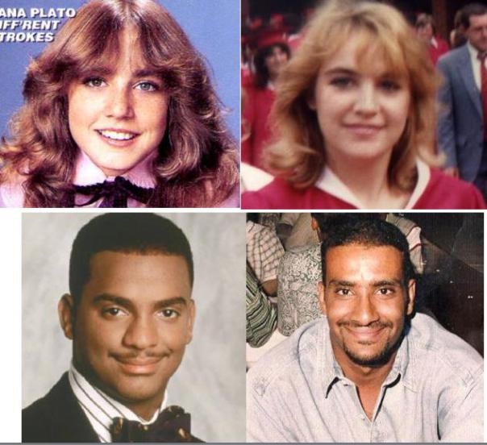

<html>
  <head><!DOCTYPE html>

  	<title> BeakSpeak Digital/title>
  	<link rel="stylesheet" href="assets/stylesheets/styles.css"
  </head>

  <body>
  	<h1> Heading/h1>

  	<div id="intro">

  	<table style="width:100%">
  <tr>
    <th><td></td></th>
    
    <th><td><p><b>Small town girl becomes American expat, professional vagabond, and citizen of the world. Believes in peace, love, and the accasional banana split with a cherry on top. I write because it is cheaper than therapy.</b></p>

    <p><a href="about_diana.html">Learn more</a> about Diana Mahmoud.</a></p></th>

</td> 
</table>
</div>
<hr>

 <h2>Latest Post</h2>

 <div id="post">

 <h3>Double Vision</h3>

 

<p><em>Have you ever been told you look like somebody? When I was a teenager, I was told I looked like Dana Plato. In my glorious 30s, when I was at my peak, I was called Sharon Stone. Today, most people tell me I resemble Ellen DeGeneres. This makes me wonder who my celebrity doppelganger will be in my 70s.</p>

<p>Anyway, here is something I wrote a while ago about the phenomenon of seeing someone who was the spitting image of someone else.</em>

<p>It happened again the other day. I caught sight of someone who looked so familiar, it caused me ask, &#34;Is it live or is it Memorex?&#34;</p>

<p>No, it wasn&#39;t anyone I really knew. The stranger only looked like a person I had been acquainted with back home in the United States. Still, the resemblance was so uncanny, it caused me question whether Dolly the Sheep was actually the first cloned mammal or a maybe just a clever cover up of something more sinister.</p>


<p>Conspiracy theories and watching one too many bad science fiction movies aside, I can&#39;t tell you how often I&#39;ve almost given myself whiplash from the double takes caused by these sort of sightings. Maybe the Doppelganger theory, the idea that there are only so many combination of physical traits possible and they must get repeated from time to time, is true. After all, humans have only 46 chromosomes, which is less than a deck of playing cards. Maybe some people are getting dealt a similar hands.</p>

<p>Who knows?</p>

<p>But what I do know is that during all my time living abroad I&#39;ve never seen the doppelganger of someone I have really loved. Oh, I&#39;ve seen copies of a my ex-husband&#39;s friend&#39;s sister, who I never really liked anyway, or the lady who stocked my company&#39;s break room with M & Ms, who, for obvious reasons, I did like. But I&#39;ve never seen someone who looked like my mother, my sister, or even my dearest friend.</p>

<p>Why is that?</p>

<p>Perhaps it&#39;s because the doppelganger could never be as good as the real thing. This would be impossible. Splenda doesn&#39;t taste like sugar, no matter how we try to convince ourselves it does. And, I can always tell fat-free salad dressing from it&#39;s fatter, more robust original, can&#39;t you?</p>


<p>When it comes to a winning hand, my loved ones are better than any royal flush. And the doppelganger, a pale comparison, couldn&#39;t even walk in the shadow of my one-and-onlys, even if it wore the very same shoe size. So maybe my mind can play tricks on my eyes when I think I see someone who looks like someone else. But it can never fool my heart, which always knows the real thing when it sees it.</p>
</div>

<div id="footer">
	<p>Copyright 2016, Diana Mahmoud</p>
</div>
